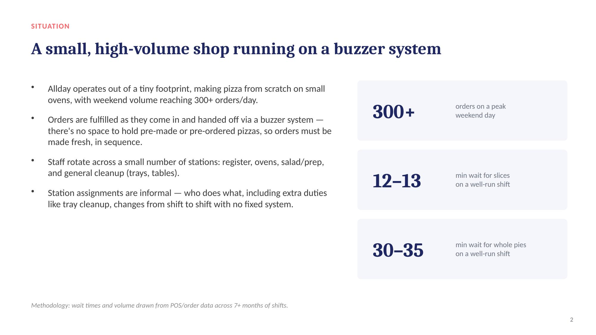
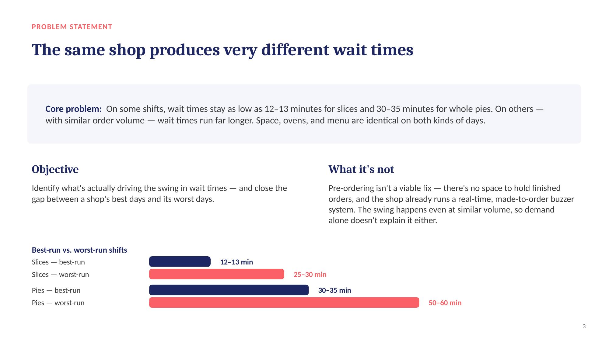
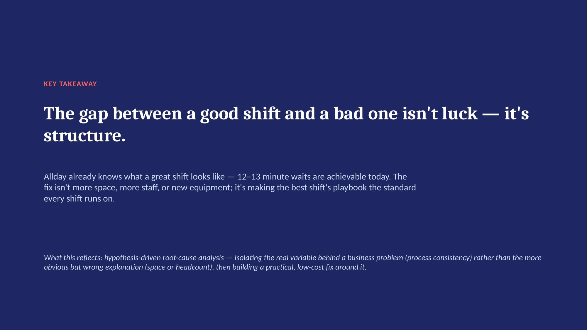

Economics + Business student who diagnoses why operations break — and fixes the process, not the headcount.
See the case study →Operations. Root-cause analysis. Data storytelling. Frontline research, too.
(built from) 7+ months on the floor
PROOF.
One shop, two very different nights. Here's how I found the actual variable behind it.

The Situation
A small, high-volume shop running on a buzzer system — 300+ orders on a peak day, no space to pre-make.
See more →
The Data
Same space, same menu, same ovens — but wait times swing by more than 2x shift to shift.
Case study →
The Fix
Turn the best shift's playbook into every shift's standard — documented roles, not luck.
Try the prototype →Working the floor at Allday Pizza for 7+ months, I noticed wait times swing wildly between shifts that looked identical on paper — same volume, same staff pool, same equipment. Using POS order data across dozens of shifts, I isolated the real driver: informal station assignment. On good shifts, one person happened to own cleanup and register stayed focused on orders. On bad shifts, that division of labor fell apart by chance.
The fix isn't more space or more staff — it's turning the best shift's playbook into every shift's standard: documented roles, a posted station chart, and cross-training so the good outcome stops depending on who happens to be on shift.
How I look at a business problem before I ever propose a fix.